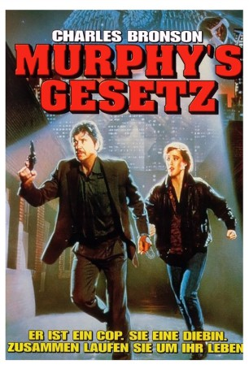

IMDB-Wertung: 5.9 / 10
IMDB-Wertung: 5.9 / 10  Metascore:
Metascore: 
Der Cop Jack Murphy ist auf der Flucht und versucht lange genug am Leben zu bleiben um den Tod seiner Frau zu rächen.
Alternativ: Murphy's Law
 IMDB-Wertung: 5.9 / 10 Metascore:
Der Cop Jack Murphy ist auf der Flucht und versucht lange genug am Leben zu bleiben um den Tod seiner Frau zu rächen.
Jahr: 1986
Dauer: 100 Minuten
FSK: 18
Land: USA Studio: Cannon Group, TheTonspuren: DD2.0 - ,
Untertitel:
Auflösung: 1080p (1920x1040) Größe: 6686 MB
Genre: Action, Thriller, Drama, Krimi, Mystery
Regisseur: J. Lee Thompson
Drehbuch: Gail Morgan Hickman
Soundtrack: Marc Donahue, Valentine McCallum
Darsteller:
 Charles Bronson als Jack Murphy
Charles Bronson als Jack Murphy Kathleen Wilhoite als Arabella McGee
Kathleen Wilhoite als Arabella McGee Bill Henderson als Ben Wilcove
Bill Henderson als Ben Wilcove Lawrence Tierney als Cameron
Lawrence Tierney als Cameron Hans Howes als Santana
Hans Howes als Santana Dennis Hayden als Sonny
Dennis Hayden als Sonny David Hayman als Jack
David Hayman als Jack Greg Finley als Booking Sergeant
Greg Finley als Booking Sergeant Robert Axelrod als Hotel Clerk
Robert Axelrod als Hotel Clerk Gerald Berns als Young Cop
Gerald Berns als Young CopDatei: X:\FSK18-1900-1999\Murphys Gesetz (1986, FSK18, 1920x1040).mkv seit 28.02.2018
Festplatte: FSK18
 Es gibt insgesamt 108 Filme in der Gruppe 'FSK18-1900-1999'
Es gibt insgesamt 108 Filme in der Gruppe 'FSK18-1900-1999'